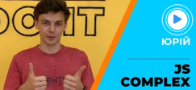

КУРС ПРОГРАМУВАННЯ
JAVA З ПРАЦЕВЛАШТУВАННЯМ:
⚬ СТАЖУВАННЯ В IT-КОМПАНІЇ
Покажи себе на курсі і ще до закінчення навчання ми відправимо тебе на стажування в IT-компанію.
⚬ ТРИ ВИПУСКНИХ ПРОЕКТИ
Наприкінці курсу ти будеш мати три проекти, з якими легко працевлаштуєшся.
⚬ ІНТЕНСИВНІСТЬ
На відміну від інших наші студенти вчаться 6 разів на тиждень в продовж всього терміну. Саме тому вони краще за випускників всіх інших шкіл та легко працевлаштовуються.
БІЛЬШЕ 800 ВИПУСКНИКІВ
ДОСЯГЛИ УСПІХУ В IT-СФЕРІ
ЧОМУ ВАРТО НАМ ДОВІРЯТИ?
ЧАСТІ ЗАПИТАННЯ
01 ГАРАНТІЇ ПРАЦЕВЛАШТУВАННЯ?
Всі хто проходив наш унікальний курс з інкубатором досвіду влаштувались на роботу. І ми єдині в Україні, хто мають відео відгуки від роботодавців.
02 ЩО ТАКЕ "ПОВТОРКА"?
Це можливість пройти курс повторно у разі, якщо ви щось пропустили. Вона повінстю безкоштовна, та має необмежену кількість разів. Іншими словами з нами ви отримаєте знання не переплачуючі за них.
03 ЩО ТАКЕ "ІНКУБАТОР"?
Інкубатор досвіду - це стажування на власному проекті впродовж 5 місяців після закінчення навчання. Саме під час цього періоду ви отримаєте практичний досвід, який так необхідний для успішного проходження співбесіди.
04 РЕЙТИНГ КОМПАНІЇ?
Більше 300 відео відгуків від працевлаштованих, відео відгуки роботодавців, більше 600 відгуків в Google та Facebook з загальним рейтингом 4.9 зірок, та більше 800 працевлаштованих випускників.
05 РОЗТЕРМІНУВАННЯ?
Є можливість розтермінування платежів строком до 24 місяців з закріпленням ціни. Це найкращі умови розтермінування в Україні. Всі деталі щодо розтермінування, ви можете дізнатись в нашого менеджера.
06 СКІЛЬКИ ТРИВАЄ КУРС?
Базовий курс з інкубатором досвіду триває - 909 годин, базовий курс 230 годин. Це найбільший курс на ринку України та СНД. Заняття 6 разів на тиждень. Саме тому така висока продуктивність. Поки інші відпочивають, ви навчаєтесь.